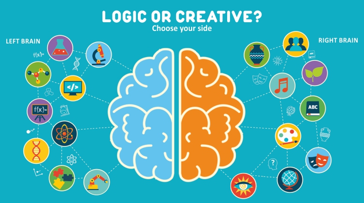

The Left Handed Children In A Right Handed World
We live in a right-handed society. Our civilization has been built around a tradition that regards the right hand as preferable to the left. Hand tools, machines, even doors were designed on the basis of this attitude. However, several years ago, Dr. Frank Freeman observed:
“The number of left-handed children seems to have increased in recent years. This may be due to relaxed home and school discipline as well as the recommendations of medical authorities that children who show early preference for the left hand should not be changed. Whatever the reason, these children are entitled to just as much guidance and help in the development of the skill of handwriting as the right-hander receives.”
Recent studies indicate that the number of left-handed children is still on the increase. Estimates range as high as ten to 15 per cent of the population. Almost assuredly, the elementary teacher will be teaching handwriting not only to right-handed children, but will also have the responsibility of instructing the left-handers. The role of parents too is extremely valuable here as important support.
Determining Hand Dominance
How can one decide which hand the child should use in writing? Wrong choices at the readiness and pre-primary level could be detrimental to the child’s writing and perhaps to the child’s learning ability and personality. The choice, then, is an important one.
If the child is definitely left-handed, it is better to teach her or him to use that hand in writing. If, however, there is some doubt as to which is the dominant hand, there are several simple ways of determining which will be the hand to train.
A few guidelines should be observed in these procedures. Do not tell the child that she or he is being tested. Keep a record as to which hand is used for each specific situation. Let the child pick up the testing materials; do not hand them to the child. Keep a tally of the procedures. If the child indicates true ambidexterity, it is probably better to train the right hand.
Several procedures are listed below. Create simple play situations with these procedures that will help the observant teacher or parent for determining hand dominance.
Hand puppet
Place a hand puppet on the table. In a play situation, observe the child to see which hand she or he puts the puppet on.
Key and lock
Padlock a cupboard in the child’s room / classroom. Place the key on a desk. Ask the child to take the key and unlock the padlock and bring you an object from the cupboard. Observe the child as she or he unlocks the padlock and picks up the object.
Hammering
Place a toy hammer and toy nails, or pegs and pegboard on the table. Observe the child as she or he hammers several nails into place, or puts pegs into pegboard.
Screwing lids on jars
Place several jars of various sizes with removable lids on the table. Place the lids in a separate pile. Ask the child to match the lids with the jars, put the lids on the jars, and close them.
Throwing a ball
Place a rubber ball on the floor. Ask the child to pick up the ball and throw it to you.
Holding a spoon
At lunchtime or in a play situation where the child must use eating utensils, observe which hand is used.
Cutting with scissors
Place a pair of safety scissors and a piece of coloured construction paper on the table. Instruct the child to cut the paper into strips. Observe which hand is used to pick up the scissors and to cut the paper. Next, place paper of a different colour on the table and have the child repeat the process. Did the child use the same hand or change hands? Repeat with a third colour.
Positions for Writing
Paper Position
For manuscript writing, the left-handed children should position the paper with the lower right corner a little to the left of the midsection. For cursive writing, the paper is slanted less, with the lower right corner pointing toward the midsection or just a little to the right of it. The strokes are pulled down toward the left elbow, whether manuscript or cursive is being written.
Pencil Position
The writing instrument is held between the thumb and first two fingers, about an inch above its point. The first finger rests on the top of the pencil or pen. The end of the bent thumb is placed against the writing instrument to hold it high in the hand and near the large knuckle. The top of the instrument points in the direction of the left elbow. The writing should take place within the left half of the desk surface, i.e., to the left of the midline of the body. The paper should be shifted to the left as the writing progresses across the page.
Special Problems
The Hooked Position
The hooked wrist is caused by incorrect paper position. In an effort to see what she or he is writing, the left-handed child often adopts the hooked position. This is a problem that should be dealt with early in the child’s development, since twisting of the hand or wrist can be detrimental to legibility and fluency.
Reversals
The problem of reversals is common to the left-handed children. Most errors result from confusion between the lowercase manuscript d and b and p and q. Awareness of the problem and concentration on the formal teaching of left to right progression and forward and backward circles before introduction of the teaching of the manuscript letters b, d, p, and q result in fewer reversals of these letters.
Chalkboard Work
Chalkboard practice is important because it lends itself to full, free arm movement and allows the child and the teacher / parent to easily spot incorrect habits. The position at the board for left-handed writing is similar to that for writing with the right hand, except that the eraser is held in the right hand and the chalk in the left, and the left-hander stands to the right of where the writing takes place for both manuscript and cursive. This is not true of the right-hander. The right-hander stands in front of his or her manuscript writing, but stands to the left of cursive writing because the down strokes are pulled toward the body’s midsection.
Special Provisions
Left-handed children should be provided with scissors designed especially for the left-hander. If table and armchairs are used, make certain left-handers don’t have to sit at desks for right-handers. Before children begin to write, demonstrate paper and pencil positions for the left-hander as well as the right-hander. It is often helpful for the left-hander to hold her or his pencil a little higher than the right-hander. The pencil points toward the left elbow, not toward the shoulder as the right-handers do. When given the proper attention and instruction, left-handers will write as well as right-handers.